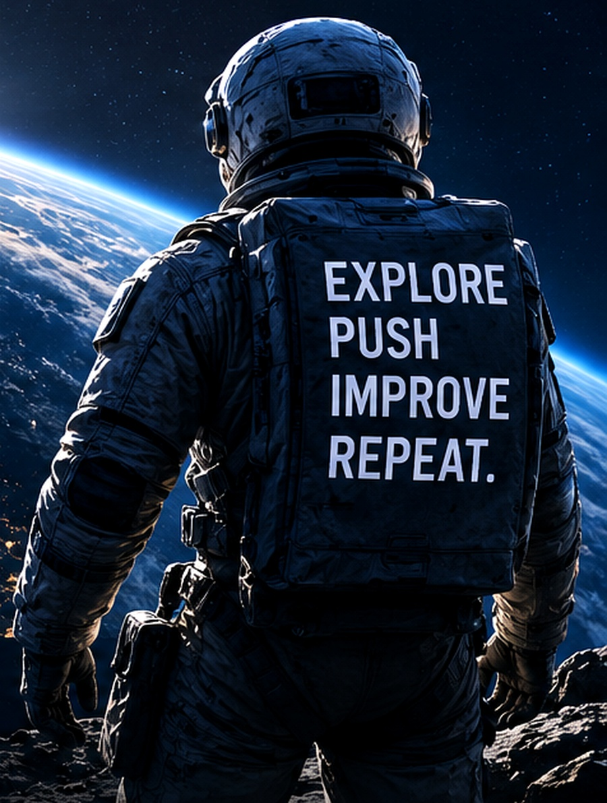

Investments
Markets, opportunities and long-term thinking.
Explore →IDEAS · INVESTMENTS · IMPACT.
Exploring technology, global markets and bold ideas to create a smarter, more innovative tomorrow.
Markets, opportunities and long-term thinking.
Explore →AI, innovation and the future of our world.
Explore →Building, learning and shipping ideas.
View GitHub →Play the space game and reach new heights.
Launch →Let's connect and build the future.
Get in Touch →ABOUT ME
I'm Moheen Mahmood, based in London. My interests sit across technology, investing, entrepreneurship and the ideas shaping the next decade.
I enjoy understanding businesses, following emerging technologies, learning from markets and thinking about the connections between innovation, capital and long-term opportunity.
NOW / CURRENTLY
A living snapshot of the themes I keep coming back to — updated as my interests evolve.
Following how AI changes software, work, productivity and the economics of building digital products.
LEARNING →Understanding companies, incentives, capital allocation and the difference between short-term noise and long-term value.
RESEARCHING →Turning ideas into interactive digital experiences — including this portfolio and the experiments inside it.
BUILDING →LIVE INFORMATION
Informational only. External market data can be delayed.
PERSONAL WATCHLIST
A lightweight personal dashboard for context, not financial advice. External data can be delayed or unavailable.
LAUNCH MARKET RADAR ↗WEEKLY BRIEF / AUTOMATIC EDITION
The page builds a fresh weekly reading list from the current technology feed. It refreshes automatically when visitors return.
The live reading list is automatically assembled from public technology stories and is not written or endorsed by Moheen. My authored notes remain separate below.
IDEAS / JOURNAL
Short-form thinking rather than formal essays — ideas, questions and themes worth revisiting.
AI / PRODUCTS
The interesting shift is not only what models can do, but how naturally intelligence becomes part of everyday software.
Read note ↗INVESTING
I’m interested in companies where strong products, distribution and execution compound over long periods.
Read note ↗TECHNOLOGY
The tools behind a platform shift can be as important as the applications everyone notices first.
Read note ↗BUILDING
This website is an experiment in turning a personal page into a living command centre: data, ideas, code and play in one place.
Read note ↗
POINT OF VIEW
Keep moving forward. Keep learning. Keep looking at what others might miss.
PROJECTS / BUILT HERE
These are not placeholder client projects. They are working modules I have built into this portfolio and can keep developing in public.
JAVASCRIPT / API / DATA UI
JAVASCRIPT / GAME LOGIC / UI
GITHUB / API / ACTIVITY
PUBLISHING / INTERACTION
API / NEWS / CURATION
WRITING / STATIC WEB
PLAY
Arrow keys steer. Space boosts. Dodge asteroids, collect energy and beat your best score.
THE OBSERVATORY / COMMUNITY
A lightweight community layer for questions about technology, markets and the future — without turning the site into an empty traditional forum.
AI / NEXT 10 YEARS
Models, chips, energy, data, interfaces, robotics — or something we are underestimating?
Reactions are stored on this device only. The site does not collect personal data for this poll.
Send me your take ↗TRANSMISSION / UPDATES
Occasional notes on technology, markets, things I’m building and ideas worth revisiting. Until a mailing service is connected, this opens a real email subscription request rather than pretending to collect an address.
PERSONAL TIMELINE
Not a résumé — just the themes that define the direction of this site and what I want to keep exploring.
Home base — a global city where technology, capital and culture constantly overlap.
A long-term curiosity about software, AI, digital products and the infrastructure behind them.
An interest in businesses, markets, capital allocation and thinking beyond short-term headlines.
Turning those interests into projects, experiments, research and digital experiences.
CONTACT
DIRECT MESSAGE